概述
总体概述
太阳活动区非线性无力场3D数据集，使用改写Thomas Wiegelmannwiegelmann(at)mps.mpg.de的LINFF(An IDL-widget program for force-free coronal magnetic fields.)程序，2022年对第一批2010到2019年HMI活动区补丁矢量场数据进行抽样预处理和计算。
整个处理流程如下：

HMI原始数据抽样细节将在原始数据及抽样部分进行介绍。程序改写内容包括，改写由IDL语言编写预处理等部分代码，需要配置自定义参数部分的代码，改写细节将在后面数据预处理及计算部分进行介绍。产品数据及使用方法可以在产品数据及使用和工具包部分查看；数据使用和合作申请详见数据支持，基于该数据库的相关成果和合作详见成果与引用。
2022第一批计算信息
计算机器
| 2022年第一批计算信息 | |
|---|---|
| 数据时间跨度 | 2010-2019 |
| 数据计算跨度 | 2021.12.10-2022.03.19 |
| 数据总存储量 | ~160T |
| 数据磁图总量 | ~73000 |
目录结构
nlfff-data-2022 # 大约73000张
├── grid1.done # 最多跑到第1层，且第1层是质量通过的
│ ├── grid1.done.duh.log # du -h . 产生的log
│ ├── grid1.done.du.log # du . 产生的log
│ ├── grid1.done.treeL1.log # tree L 1 . 产生的log
│ ├── grid1.done.tree.log # tree . 产生的log
│ ├── hmi.sharp_cea_720s.1126.20111205_000000_TAI
│ │ ├── Bout.bin # Bout.bin 数据
│ │ ├── grid1.ini # 和Bout.bin数据尺寸一致
│ │ ├── NLFFFquality1.log # 质量通过
│ │ ├── run.log # 运行日志
│ │ └── ...
│ ├── hmi.sharp_cea_720s.1126.20111205_142400_TAI
│ └── ...
├── grid1.qfail # 最多跑到第1层，但第1层是质量未通过
│ ├── grid1.qfail.duh.log
│ ├── grid1.qfail.du.log
│ ├── grid1.qfail.treeL1.log
│ ├── grid1.qfail.tree.log
│ ├── hmi.sharp_cea_720s.1126.20111205_000000_TAI
│ │ ├── Bout.bin # Bout.bin 数据
│ │ ├── grid1.ini # 和Bout.bin数据尺寸一致
│ │ ├── NLFFFquality1.log # 质量未通过
│ │ ├── run.log
│ │ └── ...
│ ├── hmi.sharp_cea_720s.1126.20111205_142400_TAI
│ └── ...
├── grid2.done # 最多跑到第2层，且第2层是质量通过的 大约15000张
│ ├── grid2.done.duh.log
│ ├── grid2.done.du.log
│ ├── grid2.done.treeL1.log
│ ├── grid2.done.tree.log
│ ├── hmi.sharp_cea_720s.1126.20111205_000000_TAI
│ │ ├── Bout.bin # Bout.bin 数据
│ │ ├── grid2.ini # 和Bout.bin数据尺寸一致
│ │ ├── NLFFFquality1.log # 质量通过
│ │ ├── NLFFFquality2.log # 质量通过
│ │ ├── run.log
│ │ └── ...
│ ├── hmi.sharp_cea_720s.1126.20111205_142400_TAI
│ └── ...
├── grid2.qfail # 最多跑到第2层，但第2层是质量未通过
│ ├── grid2.qfail.duh.log
│ ├── grid2.qfail.du.log
│ ├── grid2.qfail.treeL1.log
│ ├── grid2.qfail.tree.log
│ ├── hmi.sharp_cea_720s.1126.20111205_000000_TAI
│ │ ├── Bout.bin # Bout.bin 数据
│ │ ├── grid2.ini # 和Bout.bin数据尺寸一致
│ │ ├── NLFFFquality1.log # 质量通过
│ │ ├── NLFFFquality2.log # 质量未通过
│ │ ├── run.log
│ │ └── ...
│ ├── hmi.sharp_cea_720s.1126.20111205_142400_TAI
│ └── ...
├── grid3.done # 最多跑到第3层，且第3层是质量通过的 大约58000张
│ ├── grid3.done.duh.log
│ ├── grid3.done.du.log
│ ├── grid3.done.treeL2.log
│ ├── grid3.done.tree.log
│ ├── grid3.done.Bout.sha256sum.log # sha256sum Bout.bin 的日志
│ ├── num_0000_0099
│ ├── num_0100_0199
│ ├── num_1100_1199 # sharpnum 所属的序号范围
│ │ ├── hmi.sharp_cea_720s.1126.20111205_000000_TAI
│ │ │ ├── Bout.bin # Bout.bin 数据
│ │ │ ├── grid3.ini # 和Bout.bin数据尺寸一致
│ │ │ ├── NLFFFquality1.log # 质量通过
│ │ │ ├── NLFFFquality2.log # 质量通过
│ │ │ ├── NLFFFquality3.log # 质量通过
│ │ │ ├── run.log
│ │ │ └── ...
│ │ ├── hmi.sharp_cea_720s.1126.20111205_142400_TAI
│ │ └── ...
│ └── ...
└── B0